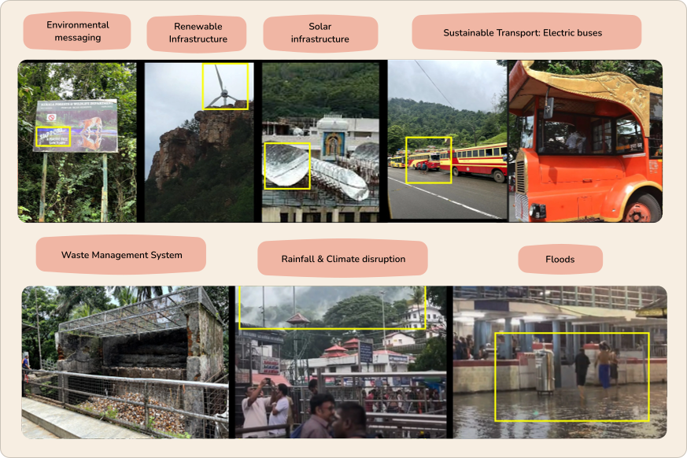
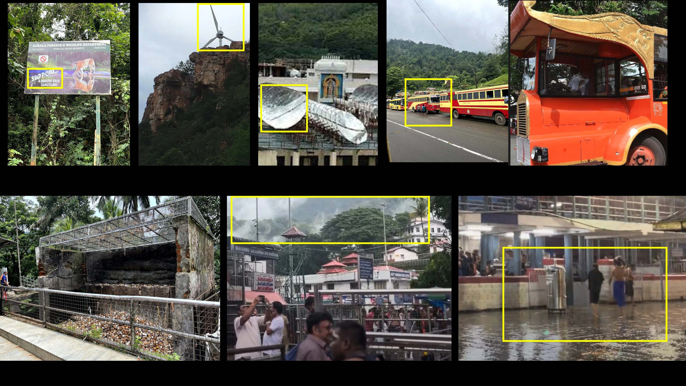
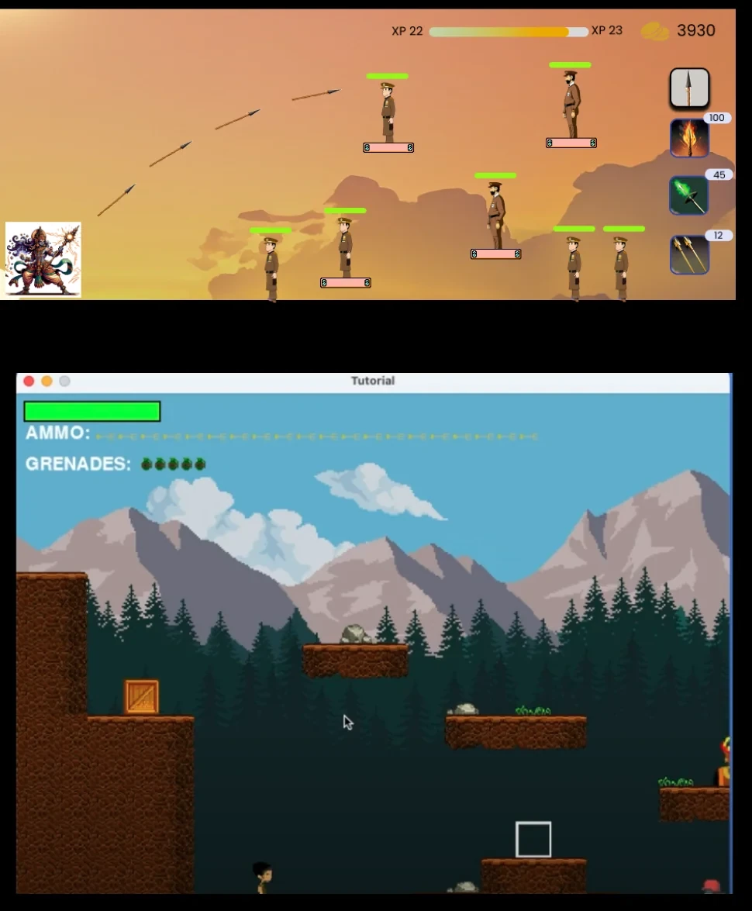
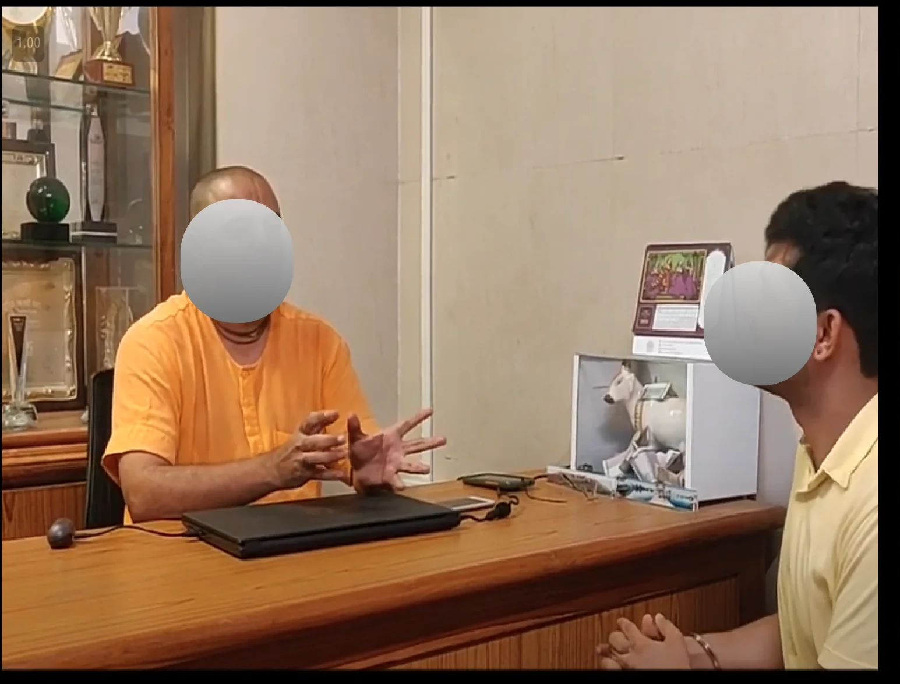
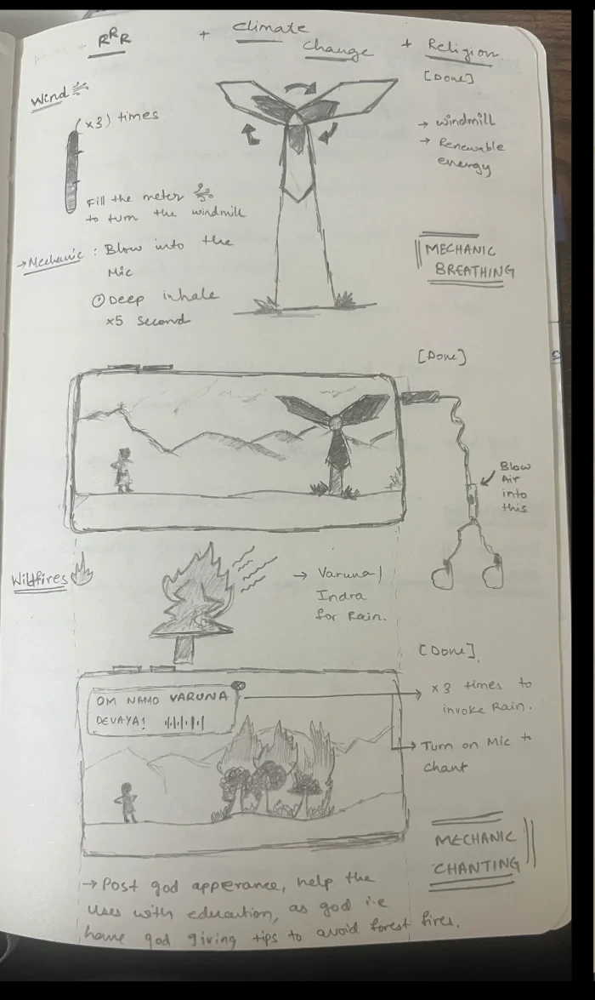
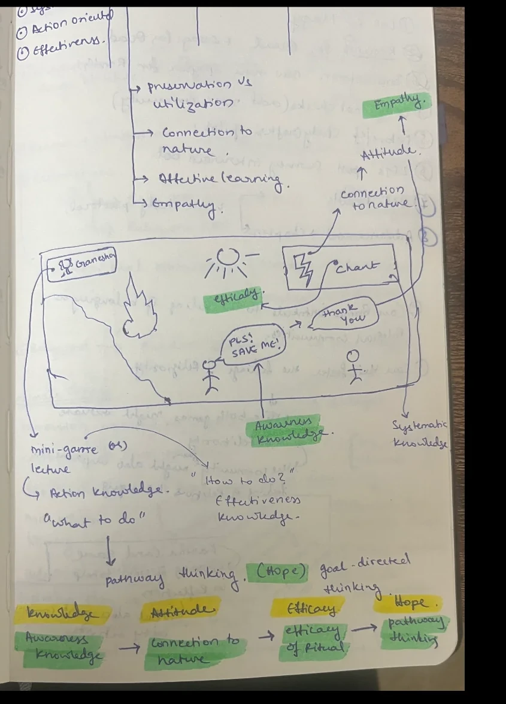
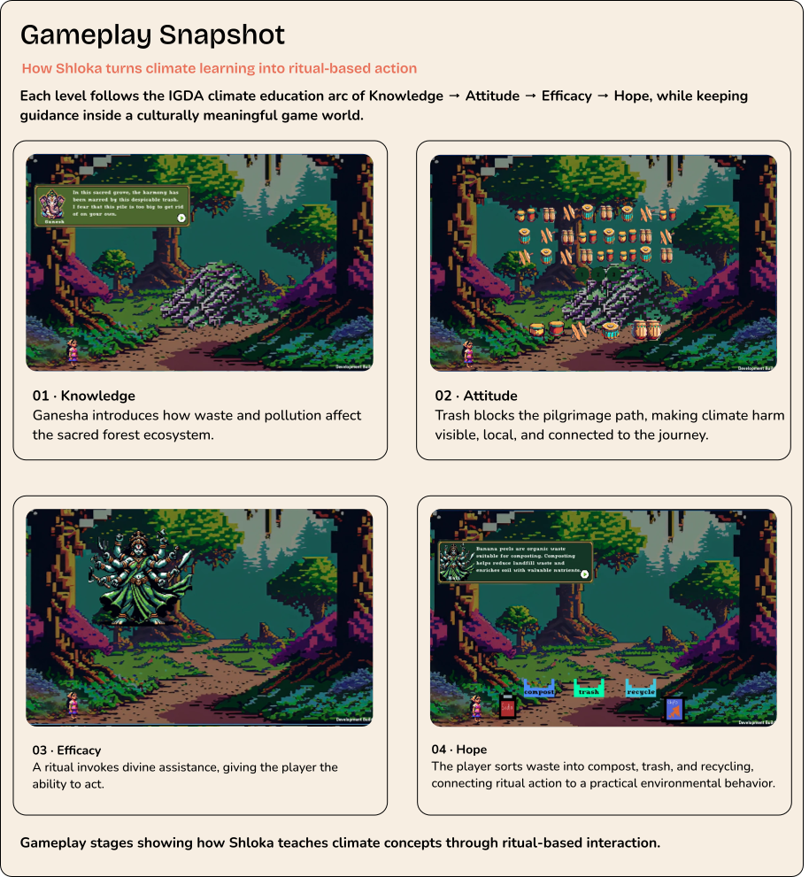
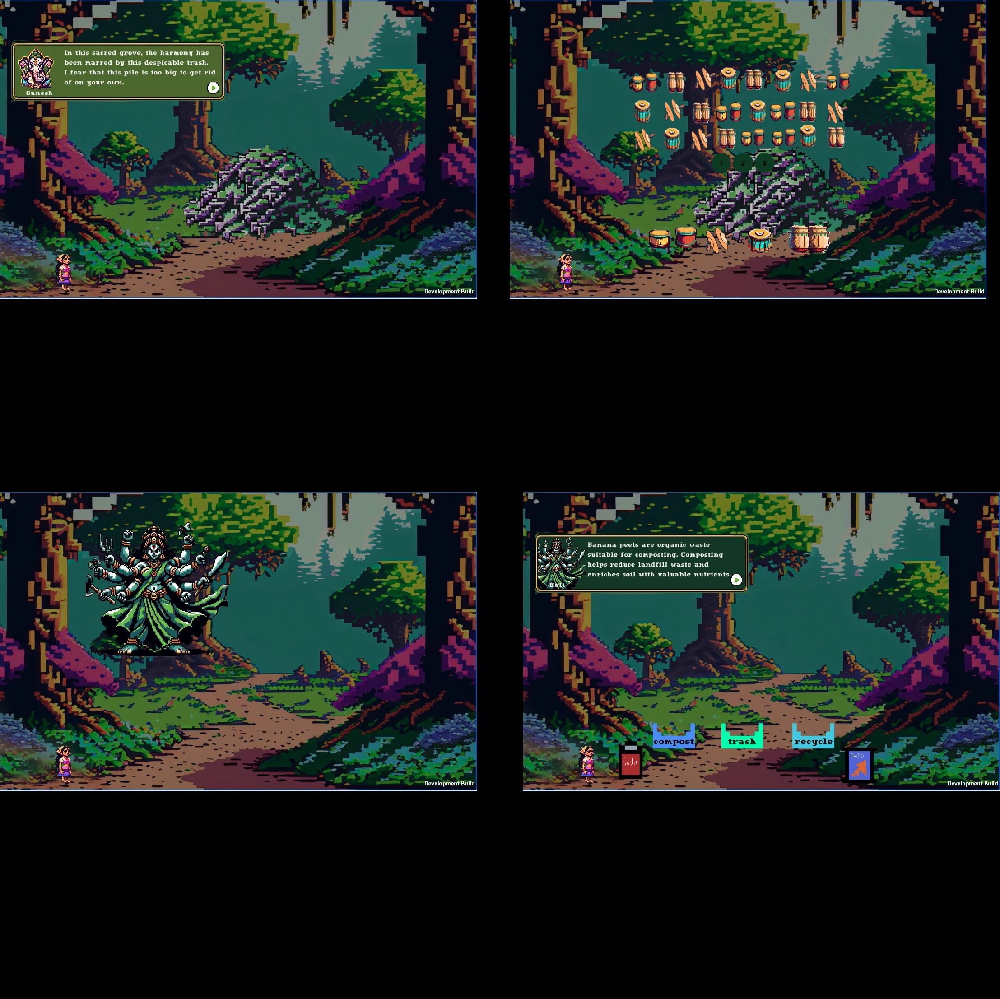
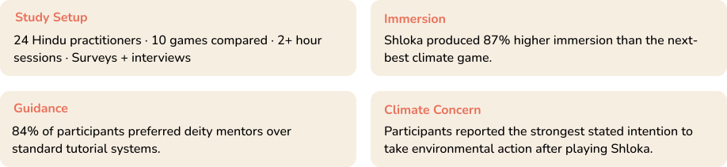
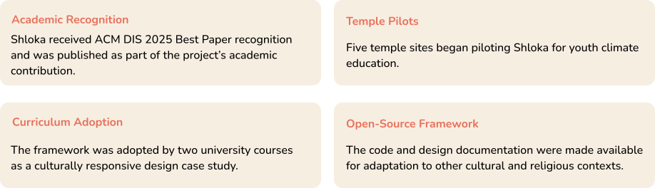

The challenge, the research-to-design response, and the outcome.
Problem
Climate games assume universal values. Generic messaging about polar bears and carbon footprints ignores communities whose environmental ethics are rooted in faith, ritual, and sacred place. Shloka asked whether climate action could feel more meaningful when connected to values players already held.
Research → Design
Led the research-to-design process for a climate game rooted in authentic Hindu practice. Through Tirumala fieldwork, analysis of 412 photos and 43 videos, scholar co-design, and 7 ritual-based game levels, Shloka translated real rituals into gameplay using computer vision, NLP, and audio recognition.
Key Insight
When climate action is framed as sacred duty rather than civic obligation, engagement transforms. Players didn’t adopt new values—they connected environmental protection to beliefs they already held. Authenticity drove this. Aesthetics didn’t.
Outcome
Shloka outperformed 9 existing climate games across immersion, guidance, and climate concern in a controlled 24-participant study. It received ACM DIS 2025 Best Paper recognition, expanded into 5 temple pilots, and was adopted by 2 university courses.
02
My Role
What I owned across research, design, and evaluation.
Zero-to-One Product Strategy
Shaped Shloka from field research into a validated product concept, defining the core experience and driving key strategic pivots.
Ethnographic Research & Synthesis
Conducted on-site research at Tirumala and analyzed multi-site data from Tirumala and Sabarimala, coding 412 photos and 43 videos to translate ritual practices, climate cues, and sacred-place relationships into design opportunities.
Co-Design with Scholars
Facilitated sessions with temple priests and Hindu scholars, using their feedback to make the game theologically respectful and to drive the key pivot from deity-control to deity-collaboration.
Ritual Interaction Design
Turned real Hindu rituals—mudras, mantras, breathing, inscription, reading, instruments, and arati—into embodied digital interactions using computer vision, NLP, audio recognition, touch, and microphone input.
Game & Narrative Design
Mapped the research findings into a seven-level game structure, pairing each climate challenge with a ritual mechanic, deity mentorship, and the learning arc of knowledge → attitude → efficacy → hope.
Comparative Evaluation
Designed the mixed-method study comparing Shloka against 9 existing climate games with 24 participants, measuring immersion, guidance, climate concern, and engagement.
03
The Problem
A billion people already care about the environment—games ignore why.
Most climate games ask players to care through generic environmental messaging: melting ice caps, carbon footprints, endangered animals, and global statistics. Those frames work for some audiences, but they miss communities whose environmental ethics are shaped by faith, ritual, and sacred geography.
In Hindu contexts, rivers can be goddesses, forests can be divine homes, and environmental harm can interrupt pilgrimage, worship, and spiritual fulfillment. Shloka asked whether a climate game could move beyond surface-level representation and use the underlying structure of religious practice as the interaction model.
Research Questions
RQ1
Narrative Connections
What connects religious stakeholders to climate change, and how can those connections become metaphors in a serious game?
RQ2
Ritual as Mechanic
How can real rituals be digitized and integrated as game mechanics without flattening or misrepresenting their meaning?
04
Research Process
From field evidence to a culturally grounded interaction model.
01
Fieldwork
On-site research at Tirumala and multi-site data from Tirumala and Sabarimala documented ritual practices, climate cues, temple infrastructure, and sacred-place relationships.
02
Synthesis
Coded 412 photos and 43 videos to identify patterns across rituals, environmental context, sacred geography, and design opportunities.
03
Scholar Co-Design
Reviewed concepts with temple priests and Hindu scholars to check cultural fit, religious sensitivity, and theological accuracy.
04
Ritual Translation
Translated real Hindu rituals into playable interactions using computer vision, NLP, audio recognition, touch, and microphone input.
05
Game Prototype
Created a seven-level climate game where each level pairs a climate crisis with a ritual mechanic and deity mentorship.
412Photos43Videos✓Hindu scholar review7Ritual mechanics9Competitor games
05
Field Documentation
What we documented at the temple sites.

Environmental messagingRenewable infrastructureSolar infrastructureSustainable transport

Waste managementRainfall and climate disruptionFloods
Visual ethnography documented how environmental concerns and sustainability efforts already appeared across Hindu pilgrimage sites—from forest-protection signage and renewable infrastructure to waste systems, rainfall disruption, and pilgrim movement.06
Ethnographic Discovery
The fieldwork revealed that climate meaning was not separate from religious life.
At the temple sites, environmental cues, ritual practices, infrastructure, and sacred geography were deeply connected. These findings shaped how Shloka moved from a climate education concept into a ritual-based game system.
Nature as Living Deities
People related to rivers, trees, and forests as sacred beings or divine homes—not neutral resources.
Design decisionNatural elements became characters with agency, not objects or meters to manage.
Climate as Religious Crisis
Rainfall disruption, deforestation, polluted rivers, and altered seasons interrupted pilgrimage, worship, and access to the divine.
Design decisionClimate harms became barriers to spiritual fulfillment and ritual life.
Environmental Action as Dharma
Temple sustainability was framed as religious duty, devotion, and respect—not policy.
Design decisionFrame climate action as sacred responsibility, not a new value.
07
Co-Design Pivot
From deity-control to deity-collaboration.
Moving from fieldwork insights to game design required more than cultural inspiration. Because Shloka worked with sacred content, the mechanics had to be theologically respectful—not just visually Hindu.

Step 01 · Prototype hypothesis
We began with power.
The first builds used deity-control and power-based climate mechanics. They were playable, but they treated divine figures as tools for the player.

Step 02 · Scholar review
The flaw became clear.
Review with Hindu scholars surfaced the theological problem: deities should retain their agency—not be controlled, upgraded, or made subservient to player action.

Step 03 · Mechanic redesign
Ritual replaced control.
Breath, chanting, and offerings became the interaction model. Players performed a ritual correctly; deities chose whether and how to respond.

Step 04 · Framework alignment
The learning arc followed.
Each ritual mechanic was mapped to knowledge, attitude, efficacy, and hope—connecting cultural integrity to measurable climate-learning outcomes.
“Deities are omnipotent and don’t need to ‘level up.’ Allowing players to control gods reduces divine agency.”— Hindu scholar
Before · Control
Players role-played gods, wielded divine powers, and leveled up. It was satisfying as game design, but theologically wrong because it made deities subservient to player action.
After · Collaboration
Players embodied Shloka, a chosen child. Instead of controlling deities, players performed rituals correctly, and deities chose to respond with guidance or assistance.
08
Rituals as Action
How real Hindu rituals became playable climate mechanics.
After the co-design pivot, the core gameplay came from ritual practice itself: chant the phrase, form the mudra, trace the inscription, offer the light. Each ritual was mapped to a specific climate challenge.
L1
Renewable Energy
Chanting: Summon Vayu, whose winds power a windmill and introduce renewable energy.
Whisper + Sanskrit pronunciation validation
L2
Waste Segregation
Musical instruments: Use devotional sound to cleanse temple grounds of post-prayer waste.
Audio interaction + composition
L3
Sacred Rivers
Inscription: Trace holy words to navigate polluted rivers.
Touch tracing + real-time guidance
L4
River Cleaning
Mudras: Form deity-specific hand gestures to summon the Fish God and purify waters.
Computer vision / GPT-4V validation
L5
Air Pollution
Breathing: Practice pranayama to clear toxic clouds blocking a holy town.
Microphone-based inhalation and exhalation tracking
L6
Forest Fires
Arati: Move the phone flashlight in a circular offering to summon Surya.
Light detection + circular-motion tracking
L7
Climate Resilience
Holy text reading: Read from the Gita to invoke Indra and extinguish fires.
Whisper + text comparison
09
Gameplay Snapshot
How Shloka turns climate learning into ritual-based action.
Each level follows the IGDA climate education arc of Knowledge → Attitude → Efficacy → Hope, while keeping guidance inside a culturally meaningful game world.


Gameplay stages showing how Shloka teaches climate concepts through ritual-based interaction.
01
Knowledge
Ganesha introduces how waste and pollution affect the sacred forest ecosystem.
02
Attitude
Trash blocks the pilgrimage path, making climate harm visible, local, and connected to the journey.
03
Efficacy
A ritual invokes divine assistance, giving the player the ability to act.
04
Hope
The player sorts waste into compost, trash, and recycling, connecting ritual action to practical behavior.
10
Evaluation
Testing cultural integration, not just usability.
The evaluation showed that Shloka did more than increase engagement. It changed how players understood climate action: first reframing responsibility as sacred, then making the harm personal through familiar holy places, and finally identifying concrete actions.

Study Setup
24 Hindu practitioners · 10 games compared · 2+ hour sessions · Surveys + interviews
Immersion
87%
Higher immersion than the next-best climate game.
Guidance
84%
Preferred deity mentors over standard tutorial systems.
Climate Concern
Participants reported the strongest stated intention to take environmental action after playing Shloka.
11
What the Data Revealed
The pattern was not simply “players liked the game.”
01
Reframe
Players began seeing climate action as sacred responsibility, not only civic or scientific concern.
02
Feel
The threat became personal because the game used holy places, rituals, and symbols participants recognized.
03
Act
Players named culturally meaningful actions—reducing ritual waste, sorting materials, and protecting sacred rivers.
12
Design Principles
What Shloka taught me beyond this project.
01
Authenticity Over Aesthetics
Real ritual structures created stronger resonance than surface-level cultural symbols. The interaction model had to come from the culture itself.
02
Values-Based Motivation
Shloka did not create new values. It connected climate action to values players already held.
03
Localized Relevance
Sacred rivers, pilgrimage routes, and familiar holy places felt more urgent than abstract global climate statistics.
04
Mentorship Over System UI
Guidance felt more meaningful when delivered through a culturally relevant mentor rather than a generic tutorial system.
05
Embodied Interaction
Performing a mudra, chant, breath, or offering created deeper engagement than simply reading about those practices.
13
Impact
From research to adoption.

Academic Recognition
ACM DIS 2025
Best Paper recognition and publication as part of the project’s academic contribution.
Temple Pilots
5 sites
Five temple sites began piloting Shloka for youth climate education.
Curriculum Adoption
2 universities
The framework was adopted as a culturally responsive design case study.
Open-Source Framework
Reusable
Code and design documentation were shared for adaptation to other cultural contexts.
14
Reflection
What I would carry forward.
Shloka taught me that culturally responsive design is not about adding cultural references at the end. The strongest design decisions came when religious practice shaped the interaction model itself.
The biggest lesson was the co-design pivot: when scholars challenged the original god-control mechanic, the project became more respectful and more engaging. Moving from control to collaboration did not weaken the game—it made the experience more authentic, meaningful, and playable.